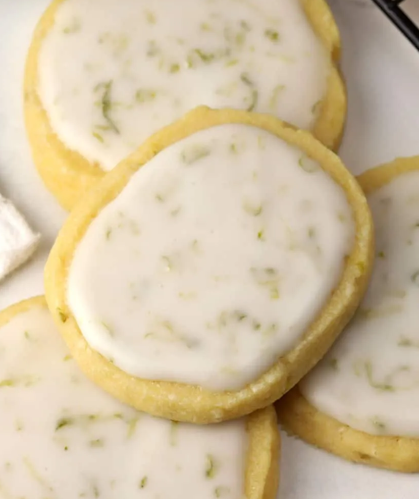

Iced Lime Shortbread Cookies
Lime shortbread cookies are sweet, tender, and buttery, with plenty of fresh lime flavor. They're the perfect cookie for summer!

Iced Lime Shortbread Cookies
Ingredients
For the Cookies:
- 1 cup unsalted butter (room temperature)
- 3/4 cup confectioner's sugar
- 2 teaspoons vanilla extract
- 1 teaspoon lime zest
- 2 cups all-purpose flour (measured properly)
- 1/2 teaspoon salt
For the Icing:
- 2 1/2 tablespoons lime juice
- 1 cup confectioner's sugar
- 1 teaspoon lime zest
Baking Instructions
1. Making the Dough
- In a bowl, add butter and sugar. Using a hand mixer or stand mixer, cream together until light and fluffy. Add vanilla and lime zest and mix to combine.
- In a separate bowl, sift (or whisk) together flour and salt. Add dry ingredients to butter mixture and mix until a dough forms. Dough may look crumbly, but will hold together when pinched between two fingers.
- Shape into a long, round tube about 2 inches thick and wrap in wax paper. Refrigerate for 30 minutes.
2. Baking
- Meanwhile, preheat oven to 350℉. Line a baking sheet with parchment paper and set aside.
- Remove dough from refrigerator and unwrap. Using a sharp knife, slice dough into 1/4 inch slices and place on lined baking sheet.
- Bake for about 10-12 minutes, or until cookies barely begin to brown around edges. Remove from oven and allow to cool for 2-3 minutes before transferring to a cooling rack to cool completely to room temperature.
3. Icing & Finishing
- While cookies are cooling, add confectioner's sugar, lime juice, and lime zest to a bowl. Stir to combine. If too thick, add another splash of lime juice.
- Once cookies have cooled completely, use a knife to ice each cookie with a thin layer of icing. Allow to dry at room temperature until icing has set.